Visualize Association Rules and Itemsets
Source:R/plot.R, R/rules2groupedmatrix.R
plot_arulesViz.RdMethods (S3) to visualize association rules and itemsets. Implemented are several popular visualization methods including scatter plots with shading (two-key plots), graph based visualizations, doubledecker plots, etc.
Usage
# S3 method for class 'rules'
plot(
x,
method = NULL,
measure = "support",
shading = "lift",
limit = NULL,
interactive = NULL,
engine = "default",
data = NULL,
control = NULL,
...
)
# S3 method for class 'itemsets'
plot(
x,
method = NULL,
measure = "support",
shading = NULL,
limit = NULL,
interactive = NULL,
engine = "default",
data = NULL,
control = NULL,
...
)
# S3 method for class 'grouped_matrix'
plot(x, ...)Arguments
- x
an object of class "rules" or "itemsets".
- method
a string indicating the visualization method. Methods for rules include "scatterplot", "two-key plot", "matrix", "grouped matrix", "graph", "paracoord", etc. Specify "help" to get a complete list of available methods. Note that some methods may only be available for rules or itemsets.
- measure
measure(s) of interestingness (e.g., "support", "confidence", "lift", "order") used in the visualization. Some visualization methods need one measure, others take a vector with two measures (e.g., scatterplot). In some plots (e.g., graphs)
NAcan be used to suppress using a measure.- shading
measure of interestingness used for the color of the points/arrows/nodes (e.g., "support", "confidence", "lift"). The default is "lift".
NULLcan be often used to suppress shading.- limit
A limit on the number of associations displayed. The top limit associations according to the measure specified in shading are chosen.
- interactive
deprecated. See parameter
enginebelow.- engine
a string indicating the plotting engine used to render the plot. The "default" engine uses (mostly) ggplot2. Other engines include "base" (base R plots), "grid", "interactive", "plotly", "visnetwork", "igraph", "graphviz", and "htmlwidget" (which can be embedded in RMarkdown). Note that not all engines are available for all methods. Specify "help" to get a complete list of available engines for the selected visualization method.
- data
the dataset (class "transactions") used to generate the rules/itemsets. Only "mosaic" and "doubledecker" require the original data.
- control
a list of control parameters for the plot. The available control parameters depend on the used visualization method and engine. Specify "help" to get a complete list of available control parameters and their default values.
- ...
Further arguments are added for convenience to the
controllist.
Value
Several interactive plots return a set of selected rules/itemsets. Other plots might return other data structures. For example, graph-based plots return the graph (invisibly). Engine "htmlwidget" always returns an object of class htmlwidget.
Details
Many plots can use different rendering engines including static standard plots (using base plots, ggplot2, grid), standard plots with interactive manipulation and interactive HTML widget-based visualizations.
Most visualization techniques are described by Bruzzese and Davino (2008),
however, we added more color shading, reordering and interactive features
(see Hahsler, 2017). Many visualization methods take extra parameters as the
control parameter list. Although, we have tried to keep control
parameters consistent, the available control parameters vary from
visualization method to visualization method. You can specift "help"
for method, engine, or control to get a list of
available settings.
Note on HTML widgets: HTML widgets tend to get very slow or unresponsive for
too many rules. To prevent this situation, the control parameter max
sets a limit, and the user is warned if the limit is reached.
The following visualization method are available:
- "scatterplot", "two-key plot"
This visualization method draws a two dimensional scatterplot with different measures of interestingness (parameter "measure") on the axes and a third measure (parameter "shading") is represented by the color of the points. There is a special value for shading called "order" which produces a two-key plot where the color of the points represents the length (order) of the rule.
- "matrix"
Arranges the association rules as a matrix with the itemsets in the antecedents on one axis and the itemsets in the consequents on the other. The measure of interestingness (first element of
measure) is either visualized by a color (darker means a higher value for the measure) or as the height of a bar (engine "3d"). The control parameterreordertakes the values"none","measure","support/confidence", or"similarity"and can be used to reorder LHS and RHS of the rules differntly. The default reordering average measure (typically lift) pushing the rules with the highest lift value to the top-left corner of the plot.- "grouped matrix"
Grouped matrix-based visualization (Hahsler and Karpienko, 2016; Hahsler 2016). Antecedents (columns) in the matrix are grouped using clustering. Groups are represented by the most interesting item (highest ratio of support in the group to support in all rules) in the group. Balloons in the matrix are used to represent with what consequent the antecedents are connected.
Interactive manipulations (zooming into groups and identifying rules) are available.
The list of control parameters for this method includes:
- "main"
plot title
- "k"
number of antecedent groups (default: 20)
- "rhs_max"
maximal number of RHSs to show. The rest are suppressed. (default: 10)
- "lhs_items"
number of LHS items shown (default: 2)
- "aggr.fun"
aggregation function can be any function computing a scalar from a vector (e.g., min, mean (default), median, sum, max). It is also used to reorder the balloons in the plot.
- "col"
color palette (default is 100 heat colors.)
- "graph"
Represents the rules (or itemsets) as a graph with items as labeled vertices, and rules (or itemsets) represented as vertices connected to items using arrows. For rules, the LHS items are connected with arrows pointing to the vertex representing the rule and the RHS has an arrow pointing to the item.
- "doubledecker", "mosaic"
Represents a single rule as a doubledecker or mosaic plot. Parameter
datahas to be specified to compute the needed contingency table. No interactive version is available.- "paracoord"
Represents the rules (or itemsets) as a parallel coordinate plot. Currently there is no interactive version available.
References
Hahsler M (2017). arulesViz: Interactive Visualization of Association Rules with R. R Journal, 9(2):163-175. ISSN 2073-4859. doi:10.32614/RJ-2017-047
Bruzzese, D. and Davino, C. (2008), Visual Mining of Association Rules, in Visual Data Mining: Theory, Techniques and Tools for Visual Analytics, Springer-Verlag, pp. 103-122. doi:10.1007/978-3-540-71080-6
Hahsler, M. and Karpienko, R. (2016), Visualizing Association Rules in Hierarchical Groups. Journal of Business Economics, 87(3):17-335. doi:10.1007/s11573-016-0822-8
Hahsler, M. (2016), Grouping association rules using lift. In C. Iyigun, R. Moghaddess, and A. Oztekin, editors, 11th INFORMS Workshop on Data Mining and Decision Analytics (DM-DA 2016).
Author
Michael Hahsler and Sudheer Chelluboina. Some visualizations are based on the implementation by Martin Vodenicharov.
Examples
# Note: To speed example execution, not all examples are not run when using example("plot").
# Use example("plot") to run all examples.
data(Groceries)
rules <- apriori(Groceries, parameter = list(support = 0.001, confidence = 0.8))
#> Apriori
#>
#> Parameter specification:
#> confidence minval smax arem aval originalSupport maxtime support minlen
#> 0.8 0.1 1 none FALSE TRUE 5 0.001 1
#> maxlen target ext
#> 10 rules TRUE
#>
#> Algorithmic control:
#> filter tree heap memopt load sort verbose
#> 0.1 TRUE TRUE FALSE TRUE 2 TRUE
#>
#> Absolute minimum support count: 9
#>
#> set item appearances ...[0 item(s)] done [0.00s].
#> set transactions ...[169 item(s), 9835 transaction(s)] done [0.00s].
#> sorting and recoding items ... [157 item(s)] done [0.00s].
#> creating transaction tree ... done [0.00s].
#> checking subsets of size 1 2 3 4 5 6 done [0.01s].
#> writing ... [410 rule(s)] done [0.00s].
#> creating S4 object ... done [0.00s].
rules
#> set of 410 rules
## Getting help
# There are many method, plotting engines and all of them have different control parameters. Use
# "help" to get help. List available methods for the object rules:
plot(rules, method = "help")
#> Available methods for plotting rules are:
#> ‘matrix’, ‘mosaic’, ‘doubledecker’, ‘graph’, ‘paracoord’, ‘scatterplot’, ‘grouped matrix’, ‘two-key plot’, ‘matrix3D’
# List the available engines for method "scatterplot"
plot(rules, method = "scatterplot", engine = "help")
#> Available engines for this plotting method are:
#> default, ggplot2, base, grid, interactive, plotly, htmlwidget
if (FALSE) { # \dontrun{
# List control parameters for scatterplot with engine "ggplot2"
plot(rules, method = "scatterplot", engine = "ggplot2", control = "help")
} # }
## Scatter plot
# Display a scatter plot using two quality measures
plot(rules)
#> To reduce overplotting, jitter is added! Use jitter = 0 to prevent jitter.
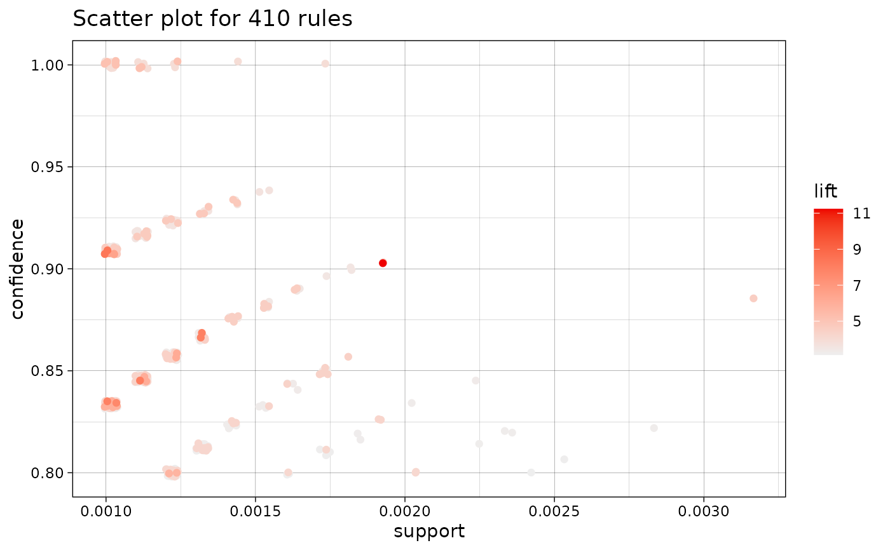
# Scatter plot with custom measures and limiting the plot to the 100 with the
# largest value for for the shading measure.
plot(rules, measure = c("support", "lift"), shading = "confidence", limit = 100)
#> To reduce overplotting, jitter is added! Use jitter = 0 to prevent jitter.
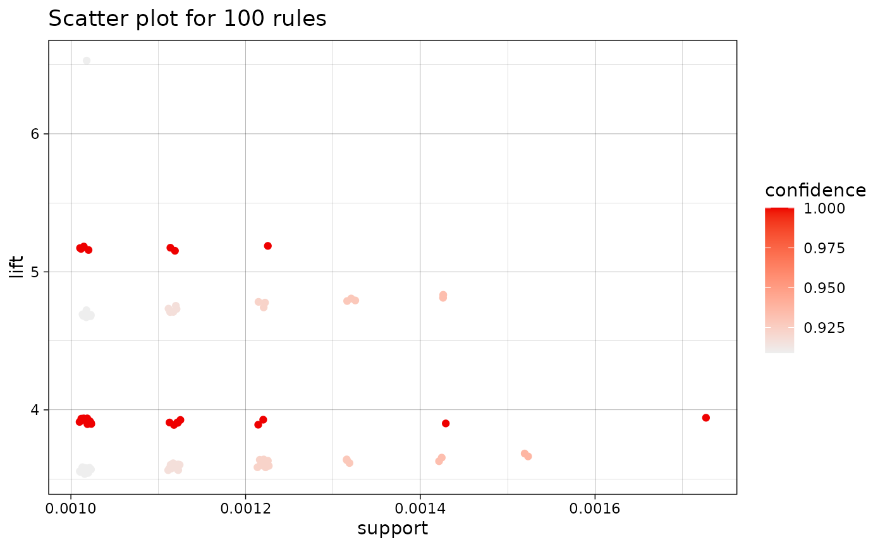
if (FALSE) { # \dontrun{
# Custom color scale, labels, theme and no title (ggplot2)
library(ggplot2)
plot(rules, engine = "ggplot2", main = NULL, limit = 100) +
scale_color_gradient2(
low = "red", mid = "gray90", high = "blue",
midpoint = 1, limits = c(0, 12)
) +
labs(x = "Supp.", y = "Conf.", color = "Lift") +
theme_classic()
# Interactive scatter plot using the grid engine (selected rules are returned)
if (interactive()) {
sel <- plot(rules, engine = "interactive")
# Create a html widget for interactive visualization (uses plotly)
plot(rules, engine = "htmlwidget")
}
} # }
# Two-key plot (a scatter plot with shading = "order")
plot(rules, method = "two-key plot", limit = 100)
#> To reduce overplotting, jitter is added! Use jitter = 0 to prevent jitter.
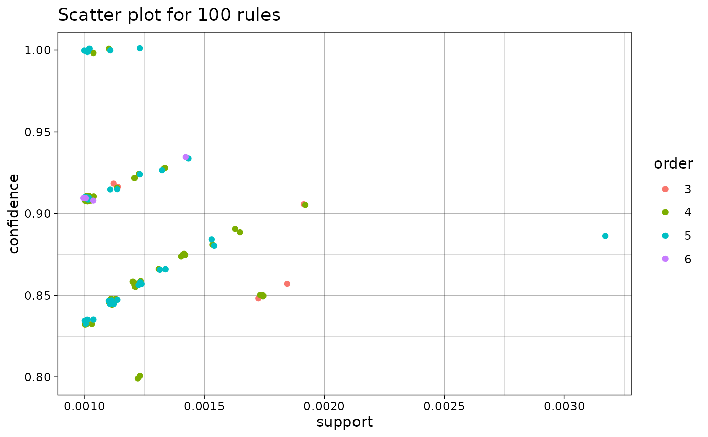
## Matrix shading
# Display rules as a matrix with RHS itemsets as rows and LHS itemsets as columns
# works better with small sets of rules
subrules <- subset(rules, lift > 5)
subrules
#> set of 32 rules
# 2D matrix with shading (ggplot2). The LHS and RHS are reordered so
# that rules with similar lift are displayed close to each other.
plot(subrules, method = "matrix")
#> Itemsets in Antecedent (LHS)
#> [1] "{liquor,red/blush wine}"
#> [2] "{citrus fruit,other vegetables,soda,fruit/vegetable juice}"
#> [3] "{tropical fruit,other vegetables,whole milk,yogurt,oil}"
#> [4] "{citrus fruit,grapes,fruit/vegetable juice}"
#> [5] "{other vegetables,whole milk,yogurt,rice}"
#> [6] "{tropical fruit,other vegetables,whole milk,oil}"
#> [7] "{ham,pip fruit,other vegetables,yogurt}"
#> [8] "{beef,citrus fruit,tropical fruit,other vegetables}"
#> [9] "{root vegetables,butter,cream cheese }"
#> [10] "{tropical fruit,whole milk,butter,sliced cheese}"
#> [11] "{other vegetables,curd,whipped/sour cream,cream cheese }"
#> [12] "{tropical fruit,other vegetables,butter,white bread}"
#> [13] "{sausage,pip fruit,sliced cheese}"
#> [14] "{tropical fruit,whole milk,butter,curd}"
#> [15] "{tropical fruit,butter,white bread}"
#> [16] "{tropical fruit,butter,margarine}"
#> [17] "{whole milk,curd,whipped/sour cream,cream cheese }"
#> [18] "{whipped/sour cream,cream cheese ,margarine}"
#> [19] "{beef,tropical fruit,butter}"
#> [20] "{pork,tropical fruit,fruit/vegetable juice}"
#> [21] "{tropical fruit,other vegetables,butter,curd}"
#> [22] "{tropical fruit,root vegetables,whole milk,margarine}"
#> [23] "{other vegetables,butter milk,pastry}"
#> [24] "{whipped/sour cream,pastry,fruit/vegetable juice}"
#> [25] "{citrus fruit,root vegetables,soft cheese}"
#> [26] "{pip fruit,whipped/sour cream,brown bread}"
#> [27] "{tropical fruit,grapes,whole milk,yogurt}"
#> [28] "{ham,tropical fruit,pip fruit,yogurt}"
#> [29] "{ham,tropical fruit,pip fruit,whole milk}"
#> [30] "{tropical fruit,butter,whipped/sour cream,fruit/vegetable juice}"
#> [31] "{whole milk,rolls/buns,soda,newspapers}"
#> [32] "{citrus fruit,tropical fruit,root vegetables,whipped/sour cream}"
#> Itemsets in Consequent (RHS)
#> [1] "{other vegetables}" "{yogurt}" "{tropical fruit}"
#> [4] "{root vegetables}" "{bottled beer}"
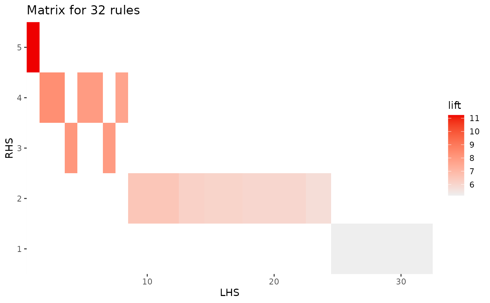
if (FALSE) { # \dontrun{
# Interactive matrix plot
# * Engine interactive: identify rules by clicking on them (click outside to end)
# * Engine htmlwidget: hoover over rules to identify
if (interactive()) {
plot(subrules, method = "matrix", engine = "interactive")
plot(subrules, method = "matrix", engine = "htmlwidget")
}
} # }
## Grouped matrix plot
# Default engine is ggplot2
plot(rules, method = "grouped matrix", k = 5)
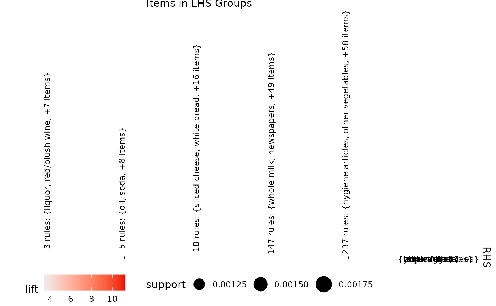
if (FALSE) { # \dontrun{
# Create a htmlwidget
plot(rules, method = "grouped matrix", engine = "htmlwidget")
# Interactive grouped matrix plot
if (interactive()) {
sel <- plot(rules, method = "grouped matrix", engine = "interactive")
}
} # }
## Graph representation
# Default engine is ggplot2 with ggraph. Associations are represented as nodes.
# We limit the number of rules to the 10 with the larges
# lift (measure used for shading)
plot(subrules, method = "graph", limit = 10)
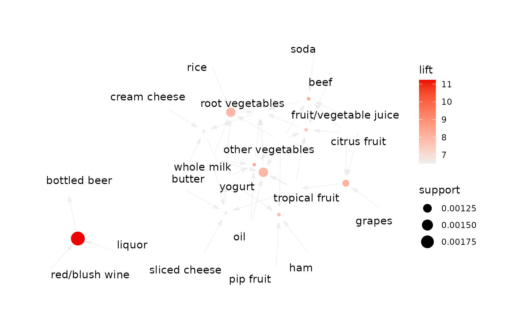
if (FALSE) { # \dontrun{
# Circular layout (see? ggraph for the meaning of the arguments)
plot(subrules, method = "graph", layout = "linear", circular = TRUE, limit = 10)
# Use igraph layouts (algorithm is passes on as ... to ggraph)
plot(subrules,
method = "graph", layout = "igraph",
ggraphdots = list(algorithm = "graphopt", spring.const = 1, mass = 10), limit = 10
)
# Specify edge and node representation
library(ggplot2)
plot(subrules,
method = "graph",
control = list(
edges = ggraph::geom_edge_link(
end_cap = ggraph::circle(4, "mm"),
start_cap = ggraph::circle(4, "mm"),
color = "black",
arrow = arrow(length = unit(2, "mm"), angle = 20, type = "closed"),
alpha = .2
),
nodes = ggraph::geom_node_point(aes(size = support, color = lift)),
nodetext = ggraph::geom_node_label(aes(label = label), alpha = .8, repel = TRUE)
),
limit = 10
) +
scale_color_gradient(low = "yellow", high = "red") +
scale_size(range = c(2, 10))
# ggplot also can represent associations as edges. Here a rules is represented as a set of
# arrows going from the LHS items to the RHS item.
plot(subrules, method = "graph", asEdges = TRUE, limit = 10)
plot(subrules, method = "graph", asEdges = TRUE, circular = FALSE, limit = 10)
} # }
# Engine igraph
plot(subrules, method = "graph", engine = "igraph", limit = 10)
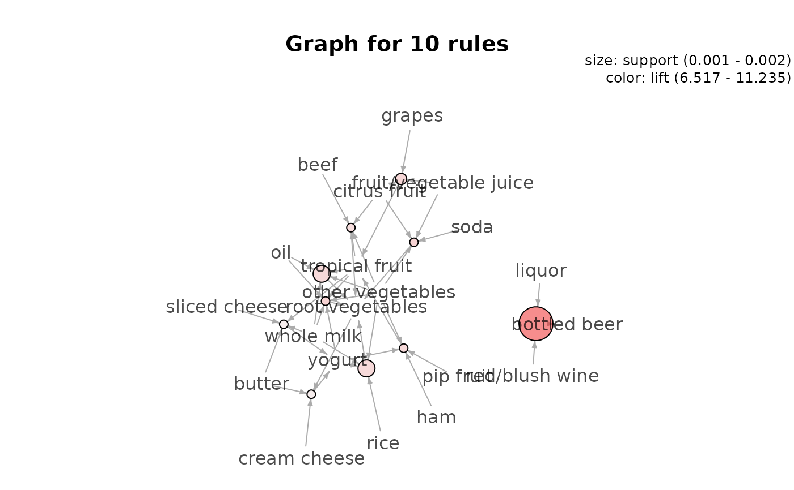
plot(subrules,
method = "graph", engine = "igraph",
nodeCol = grey.colors(10), edgeCol = grey(.7), alpha = 1,
limit = 10
)
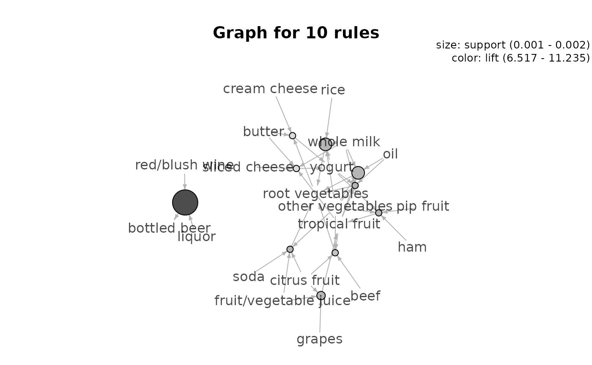
# Use plot_options to alter any aspect of the graph
# (see: https://igraph.org/r/doc/plot.common.html)
plot(subrules,
method = "graph", engine = "igraph",
plot_options = list(
edge.lty = 2,
vertex.label.cex = .6,
margin = c(.1, .1, .1, .1),
asp = .5
),
limit = 10
)
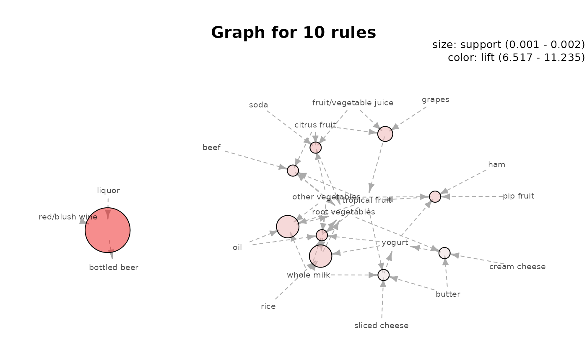
# igraph layout generators can be used (see ? igraph::layout_)
plot(subrules, method = "graph", engine = "igraph", layout = igraph::in_circle(), limit = 10)
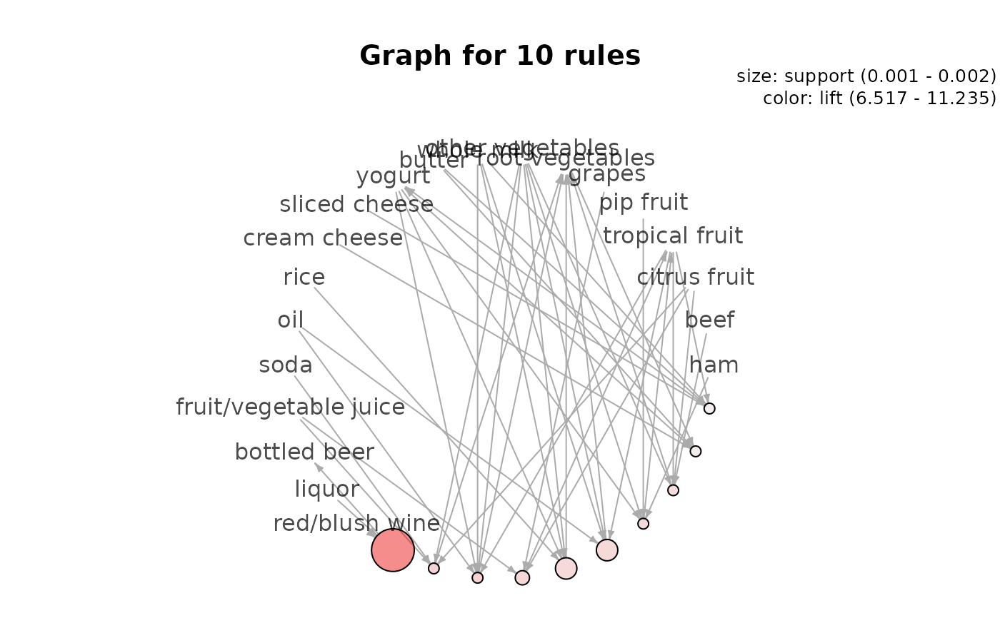
if (FALSE) { # \dontrun{
# Graph rendering using engine graphviz
plot(subrules, method = "graph", engine = "graphviz", limit = 10)
if (interactive()) {
# Default interactive plot (using igraph's tkplot)
plot(subrules, method = "graph", engine = "interactive", limit = 10)
# Interactive graph as a html widget (using igraph layout)
plot(subrules, method = "graph", engine = "htmlwidget", limit = 10)
plot(subrules,
method = "graph", engine = "htmlwidget",
igraphLayout = "layout_in_circle", limit = 10
)
}
} # }
## Parallel coordinates plot
plot(subrules, method = "paracoord", limit = 10)
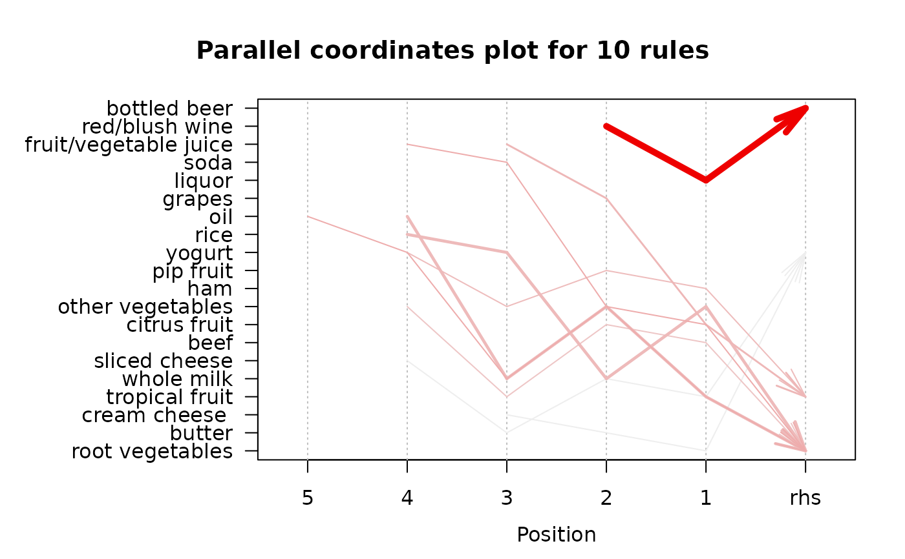
## Doubledecker and mosaic plot
# Uses functions in package vcd
# Notes: doubledecker and mosaic plots only visualize a single rule
# and the transaction set is needed.
oneRule <- sample(rules, 1)
inspect(oneRule)
#> lhs rhs support confidence coverage lift count
#> [1] {citrus fruit,
#> whipped/sour cream,
#> sugar} => {whole milk} 0.001118454 0.8461538 0.00132181 3.311549 11
plot(oneRule, method = "doubledecker", data = Groceries)
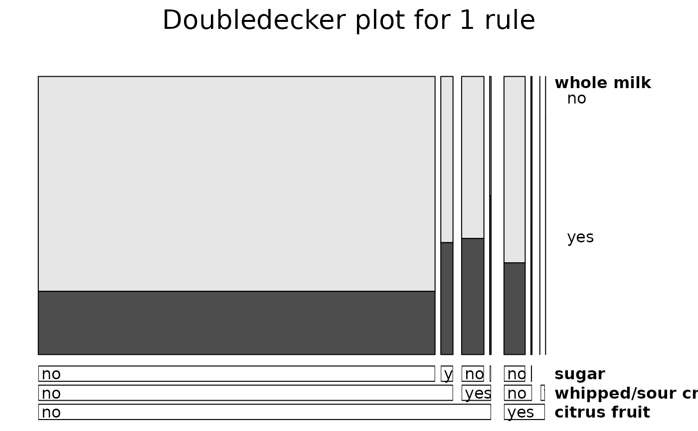
## Visualizing itemsets
data(Groceries)
itemsets <- eclat(Groceries, parameter = list(support = 0.02, minlen = 2))
#> Eclat
#>
#> parameter specification:
#> tidLists support minlen maxlen target ext
#> FALSE 0.02 2 10 frequent itemsets TRUE
#>
#> algorithmic control:
#> sparse sort verbose
#> 7 -2 TRUE
#>
#> Absolute minimum support count: 196
#>
#> create itemset ...
#> set transactions ...[169 item(s), 9835 transaction(s)] done [0.00s].
#> sorting and recoding items ... [59 item(s)] done [0.00s].
#> creating sparse bit matrix ... [59 row(s), 9835 column(s)] done [0.00s].
#> writing ... [63 set(s)] done [0.01s].
#> Creating S4 object ... done [0.00s].
# default is a scatter plot with ggplot2
plot(itemsets)
#> To reduce overplotting, jitter is added! Use jitter = 0 to prevent jitter.
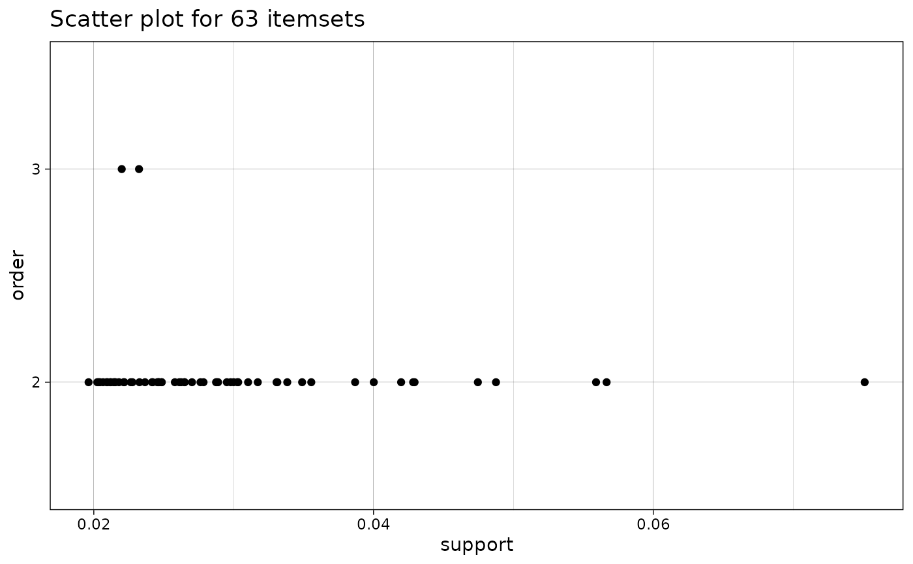
plot(itemsets, method = "graph", limit = 10)
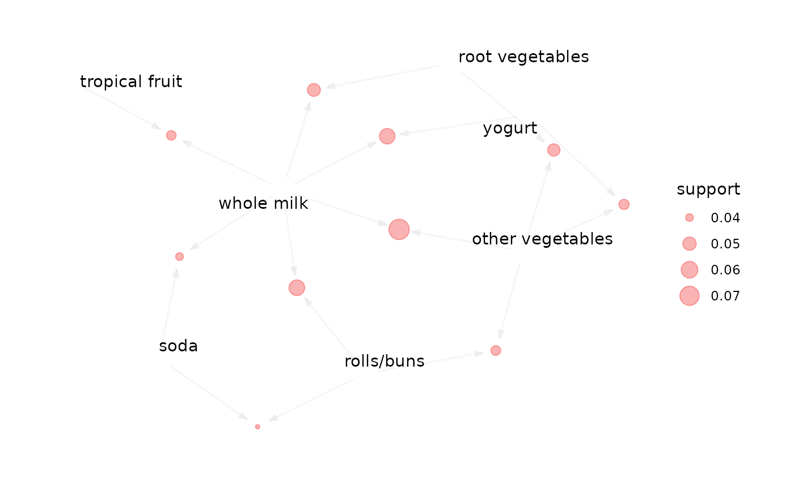
if (FALSE) { # \dontrun{
plot(itemsets, method = "graph", asEdges = TRUE, limit = 10)
plot(itemsets, method = "graph", asEdges = TRUE, circular = FALSE, limit = 10) +
theme(plot.margin = margin(10, 10, 30, 20, "mm"))
} # }
plot(itemsets, method = "paracoord", alpha = .5, limit = 10)
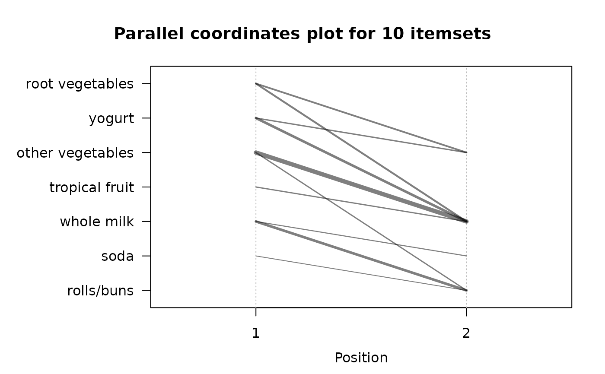
# Add more quality measures to use for the scatter plot
quality(itemsets) <- interestMeasure(itemsets, transactions = Groceries)
head(quality(itemsets))
#> support count allConfidence crossSupportRatio lift
#> 1 0.02043721 201 0.07998408 0.1882212 1.663094
#> 2 0.02125064 209 0.08316753 0.2053323 1.585180
#> 3 0.02613116 257 0.10226821 0.2085157 1.919481
#> 4 0.02216573 218 0.08674891 0.2256267 1.504719
#> 5 0.02165735 213 0.11192853 0.2979506 1.941476
#> 6 0.02053889 202 0.08038201 0.2307998 1.363029
plot(itemsets, measure = c("support", "allConfidence"), shading = "lift")
#> To reduce overplotting, jitter is added! Use jitter = 0 to prevent jitter.
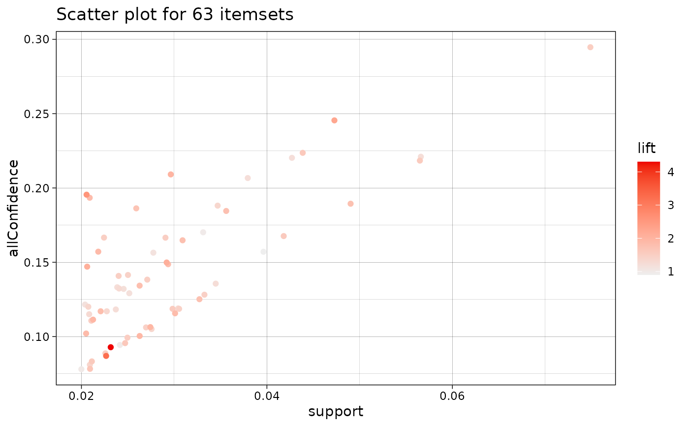
if (FALSE) { # \dontrun{
# Save HTML widget as web page
p <- plot(rules, engine = "html")
htmlwidgets::saveWidget(p, "arules.html", selfcontained = FALSE)
# Note: self-contained seems to make the browser slow.
# inspect the widget
browseURL("arules.html")
# clean up
unlink(c("arules.html", "arules_files"), recursive = TRUE)
} # }